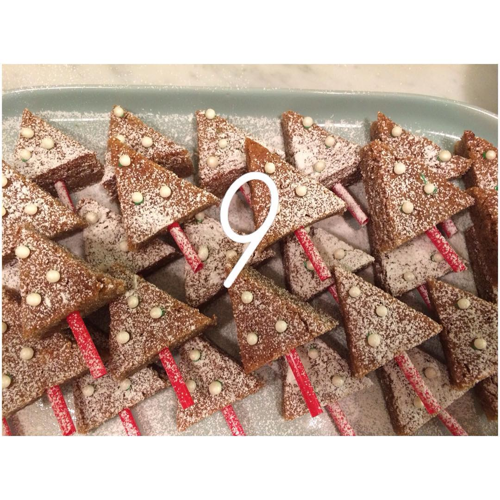

Mängd:
Ca 24 bitar
Du behöver:
- 100 g rostade hasselnötter
- 250 g smör
- 2 dl kakao
- 4 ägg
- 4½ dl strösocker
- ½ tsk salt
- 2 krm vaniljpulver
- 3 dl vetemjöl
- ½ tsk bakpulver
Gör så här:
- Sätt ugnen på 175°
- Lägg bakplåtspapper i en fyrkantig form, ca 20*30 cm.
- Hacka nötterna.
- Smält smöret och rör ner kakao.
- Rör ihop ägg och socker i en bunke.
- Vänd ner kakaoblandningen, salt, vaniljpulver, nötter och mjölet blandat med bakpulver.
- Bred ut smeten i formen och grädda i mitten av ugnen 20-25 min. Låt svalna och skär kakan i rutor. Förvara i kyl.
Tips:
Gör dubbel sats och grädda i en stor långpanna ca 30*40 cm i 25-30 min.